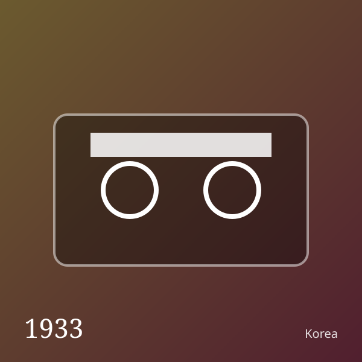

records banned under the 1933 Chōsen record-censorship rules (lead set)

Background: from 1933, the Government-General required lyrics and test pressings before sale; stampers were destroyed and issued discs confiscated. Mun Ok-bae's 일제의 노래검열 (Northeast Asian History Foundation, Dec 2025) lists banned titles; also Lee Jun-hee's SNU study (2007).